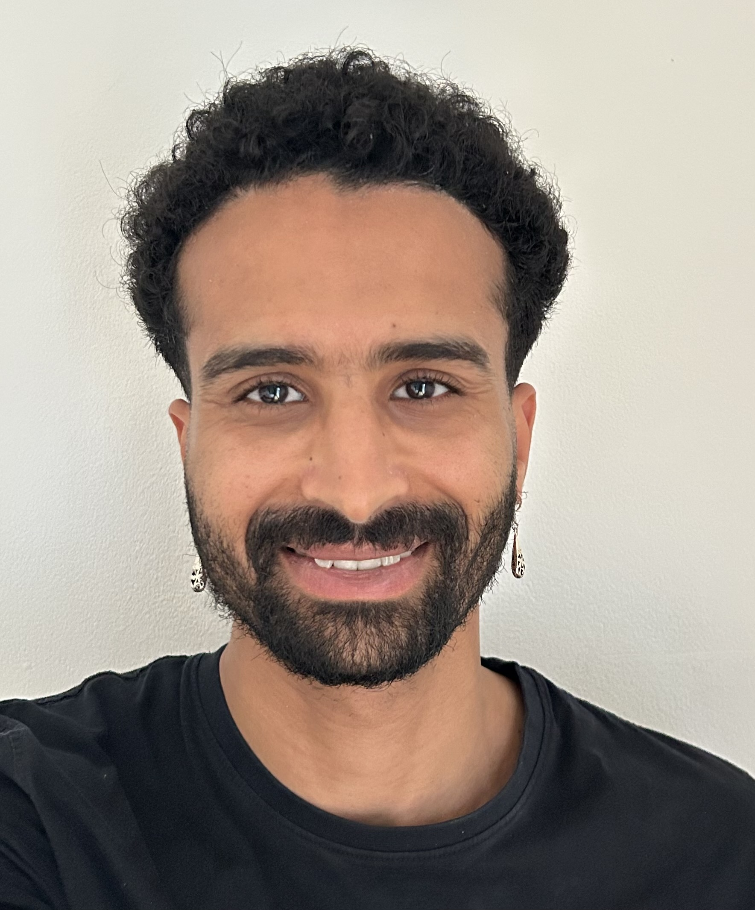

Research data scientist and statistician with experience in academic research and scientific software. I design and implement statistical and machine-learning workflows, develop open-source tools, and communicate results across academic and applied settings. My work combines scientific modeling, software development, and collaboration around real research questions.
MSTWeatherGen, an open-source R package for multivariate space-time simulation.